P4 靠背
第二个零件：靠背。它下端是一个圆筒，套在铰链轴上；上面是一块斜放的板，手机靠在上面。先把底座的孔“投影”过来对齐，再画靠背的侧面轮廓，对称拉伸，然后开螺母槽和减重窗口。
做完这一页：
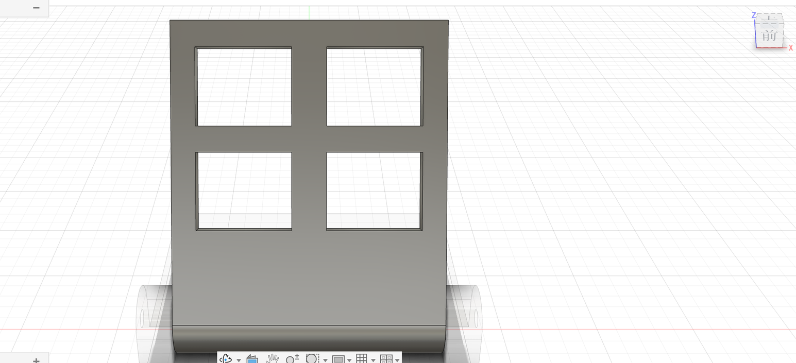
第 1 步：新建零部件“靠背”#
- 先点浏览器最上面一行（整个设计）右边的圆点，激活根。
- 「装配 → 新建零部件」，名称
靠背，「激活」保持勾选，点「确定」。
第 2 步：侧面轮廓#
- 「创建草图」→ YZ 平面。
- 「创建 → 投影 / 包含 → 投影」，点底座耳朵上的铰链孔边，点「确定」。孔的圆被“抄”到了当前草图里（紫色的线），它的圆心就是铰链轴。
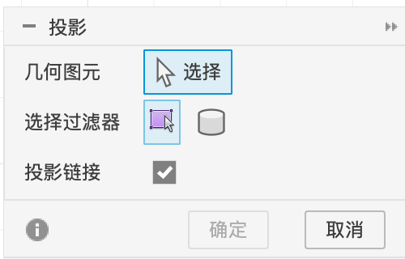
- 以这个圆心为中心画两个圆：一个直径
bolt_d（靠背上的孔），一个半径8（靠背下端的圆筒）。
接下来画斜板。它是一个斜放的长条矩形，所以用「三点矩形」（前两点定一条边的方向和长度，第三点定宽度），然后用约束和尺寸把它“摆正”：
- 「创建 → 矩形 ▸ → 三点矩形」。第 1 点点在大圆的右上方圆周上（鼠标落在圆上时会出现一个小的重合图标）；第 2 点往左上方斜着拉，大约 70 mm 远点下；第 3 点往右下方拉出大约 5 mm 的厚度点下。画个大概就行。
- 加相切约束：工具栏「约束」组里点「相切」，先点刚才贴着大圆的那条长边，再点大圆。长边就“贴”在圆筒外面了，手机靠上去的就是这一面。
- 画一条“地平线”用来量角度：「直线」从圆心往左水平画一段（出现水平小图标再点），按 esc；选中这条线，在草图选项板里点「构造」，它变成虚线（构造线只用来辅助，不会变成实体）。
- 按 D：点构造线，再点贴着圆的那条长边，鼠标移到两条线夹角的里面放下尺寸，输入
65。这是板子和地面的夹角：数字越小，板子躺得越平。 - 继续按 D：点贴圆的长边，输入
70（板长）；点两条长边，输入5（板厚）。「完成草图」。
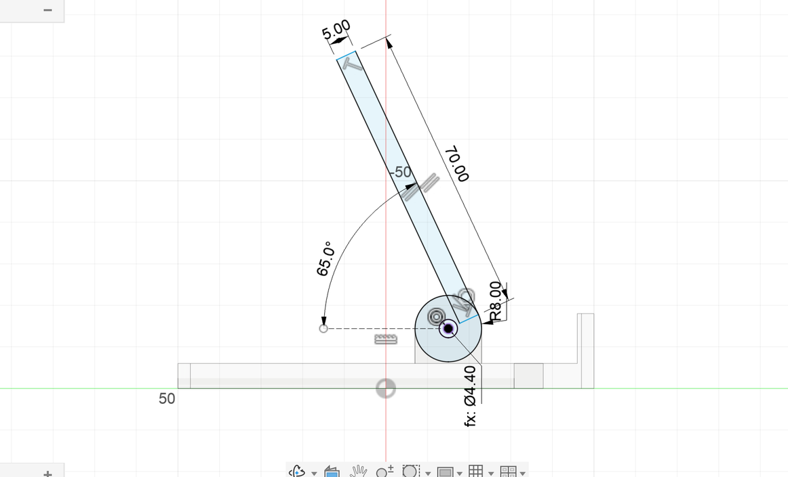
第 3 步：对称拉伸#
- 按 E，按住 ⇧ 选圆筒和斜板的区域。斜板的下端伸进了大圆里，线条把它们分成了 3 块：圆环、斜板在圆外的部分、两者重叠的一小块，三块都要选。不要选中间的小孔（不然孔就被填上了）。
- 「方向」选「对称」，「测量」选第二个图标（全长）。
- 距离输入
w - 16 mm - 2 * gap（支架宽 − 两个耳朵 − 两边的间隙 = 63.2 mm）。 - 「操作」选「新建实体」，点「确定」。
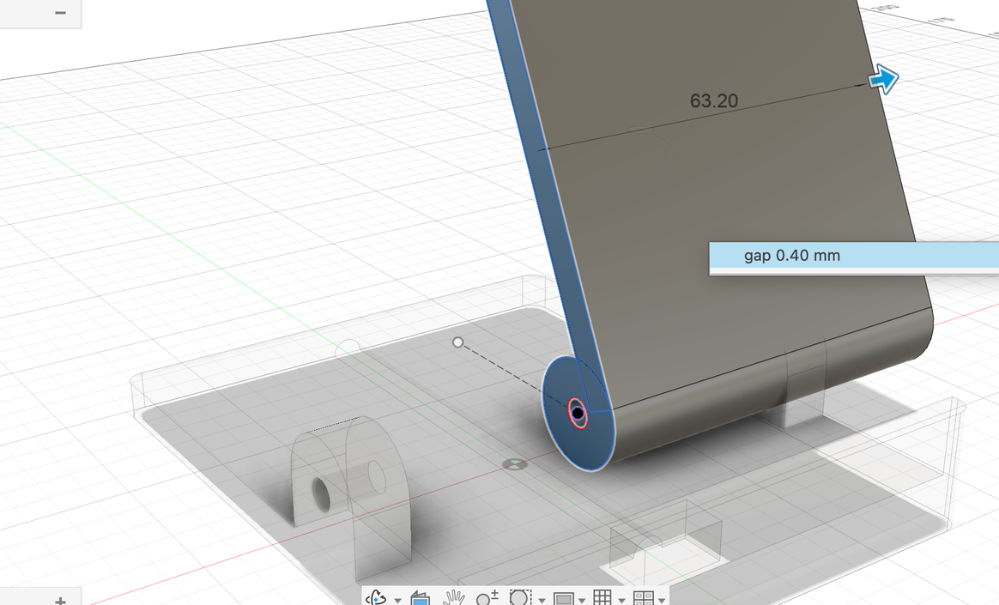
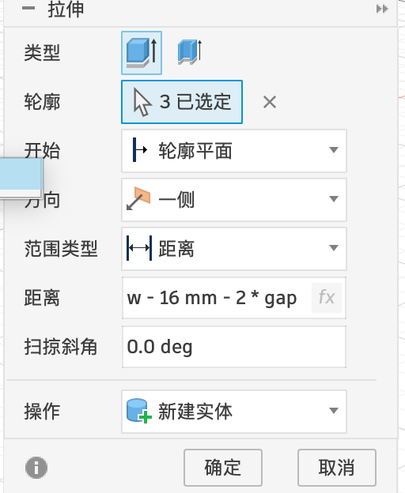
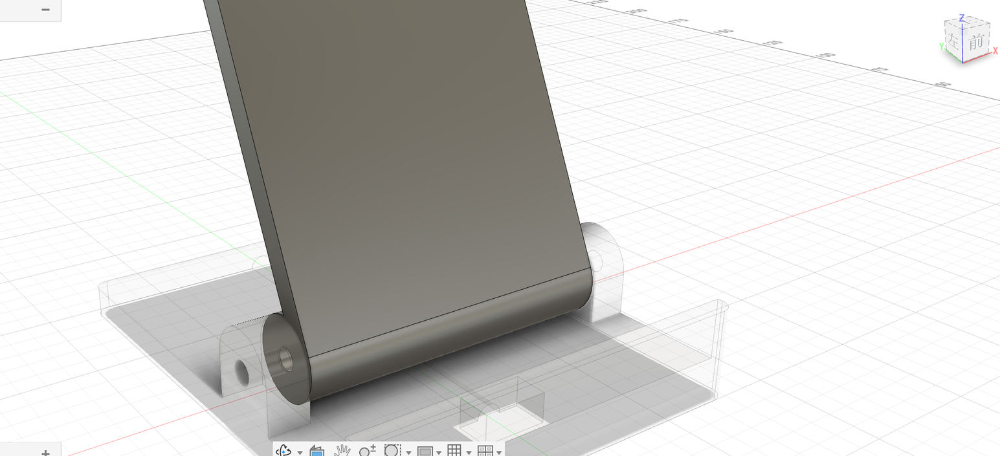
第 4 步：螺母槽#
- 圆筒的右端面紧挨着底座的耳朵，直接点很容易点到耳朵上。先在浏览器里点「底座:1」前面的小眼睛把底座隐藏。
- 「创建草图」→ 点靠背圆筒的右端面。
- 「多边形 → 内接多边形」：圆心点在孔心，边数 6；标两条对边的距离
7.3（M4 螺母对边 7 mm，加 0.3 间隙）。「完成草图」，再点小眼睛把底座显示回来。
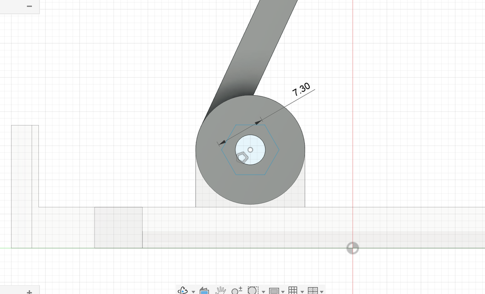
- 拉伸六边形（中间的小圆孔不用选），往里
3.4mm，「剪切」。 - 选中这个剪切特征，「创建 → 镜像」，镜像平面 YZ：左端也有了。
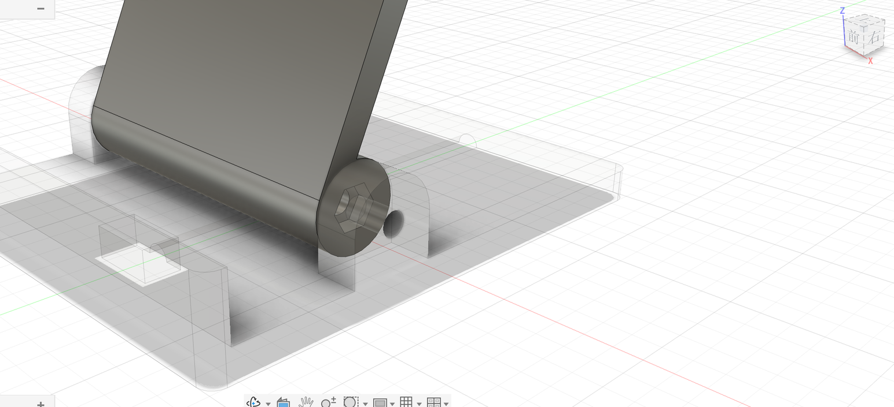
第 5 步：减重窗口 + 矩形阵列#
- 「创建草图」→ 点斜板的正面（手机靠的那一面）。视角会自动转成正对斜板。
- 「两点矩形」在板的左下区域画一个矩形。
- 按 D 标 4 个尺寸：宽
22、高18；再定位置——点矩形右边、再点原点，标4（离中线 4 mm）；点矩形下边、再点斜板的下边缘，标22。线全部变黑就说明完全定住了。
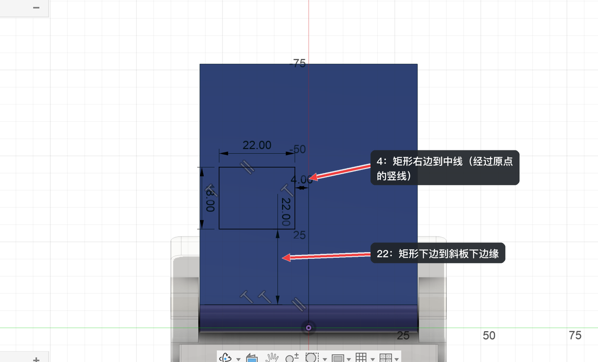
- 拉伸「剪切」，范围「全部」，开出一个窗口。
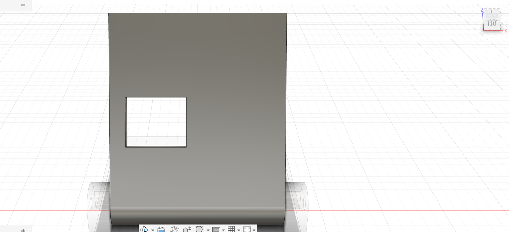
- 选中刚才的剪切特征，「创建 → 阵列 → 矩形阵列」，「对象类型」是「特征」。
- 「轴」点 X 轴（左右方向），数量
2，间距30；出现第二方向后，点斜板的长边，数量2，间距24。预览里如果复制出来的窗口跑到了板子外面，说明方向反了：把间距改成负数（-30/-24）就会往另一边排。点「确定」。
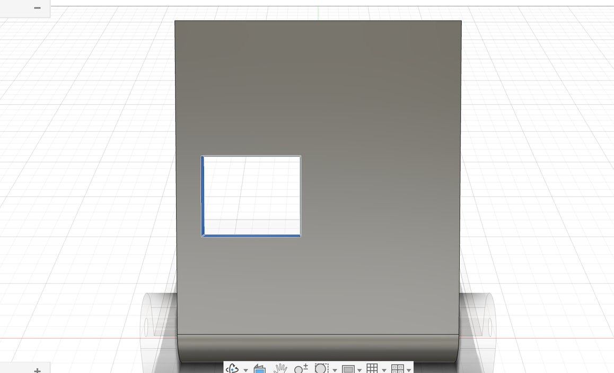
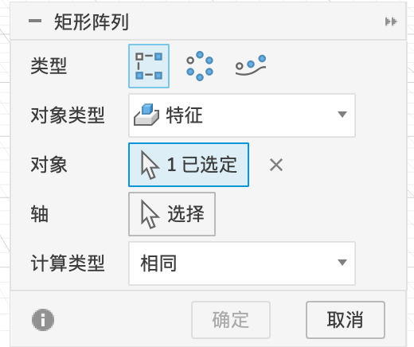
矩形阵列
| 选项 | 含义 |
|---|---|
| 类型 | 三个图标：矩形阵列 / 环形阵列 / 沿路径阵列，可以在这里直接切换 |
| 对象类型 | 阵列什么：面 / 实体 / 特征 / 零部件 |
| 对象 | 要复制的东西 |
| 轴（方向 1 / 方向 2） | 沿哪个方向排。选了第一个方向后会出现数量、距离等，还会出现第二方向 |
| 分布 | 距离按“总长度”（范围）还是“相邻间距”算 |
| 抑制 | 勾选后，画布上每个复制品都有一个勾，点掉就能删掉个别的 |
| 计算类型 | Fusion 怎么算每个复制品：优化（最快，适合面很少的简单特征）/ 相同（每个复制品和原来的一模一样）/ 调整（每个复制品按自己所在的位置重新算，比如“打穿到底”遇到的厚度不同时）。本例用默认就行 |